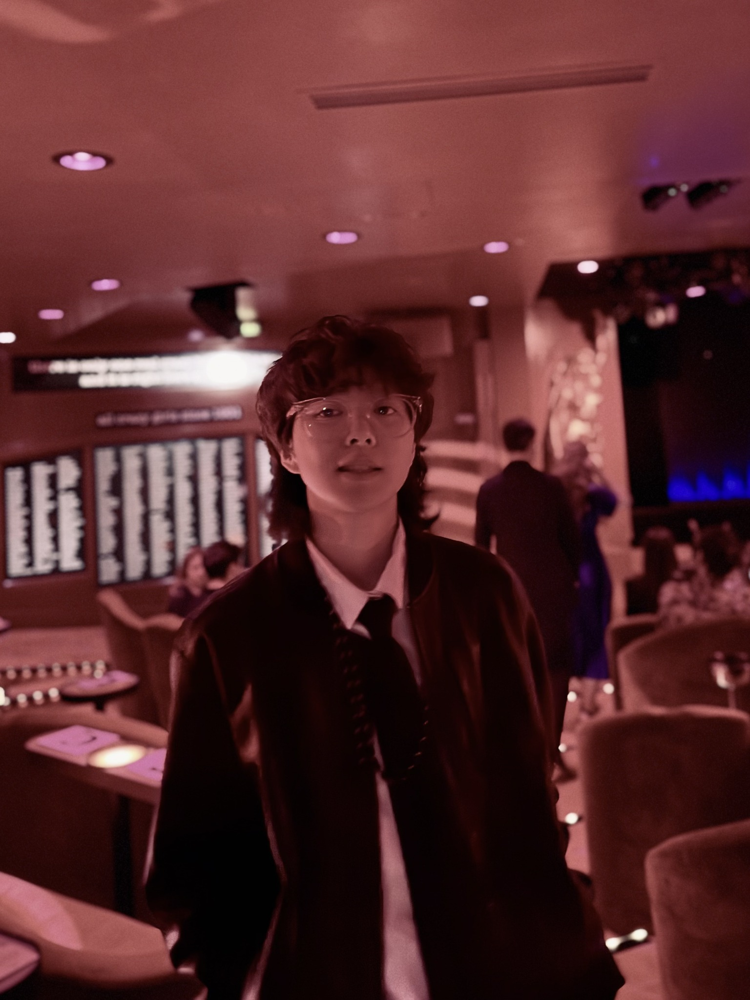
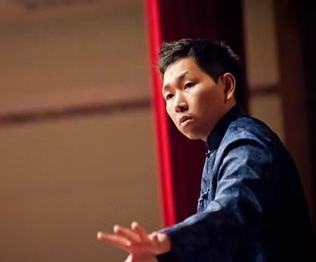

行政、演師、演員、樂師與劇作共同構成雷音劇坊。點選每位成員，即可閱讀個人經歷與近期創作。


雷音劇坊團長、主要演師，長期投入布袋戲操偶、口白、製作與教育推廣。
現職｜雷音劇坊演師兼團長；國立宜蘭大學「偶蘭天成布袋戲研習社」指導老師
學歷｜國立高雄師範大學碩士
團務職掌｜綜理團務、策劃團務改進與發展，並主持及參與團內外會議與活動。
兼具歌仔戲表演與演藝行政經驗，並持續投入傳統戲曲傳習。
團務職掌｜協助團務運作與執行、綜理演藝團隊業務，並負責行政及團務會議紀錄。
雷音劇坊文場樂師兼秘書長，專長歌仔戲與布袋戲後場音樂。
學歷｜國立臺北藝術大學傳統音樂學系戲曲理論碩士
團務職掌｜襄助團長處理業務與綜核文稿，並協調各項團務推動。
具戲劇創作、排練協作與專案行政經驗，長期參與雷音校園巡演及兒童布袋戲製作。
學歷｜國立成功大學戲劇碩士學位學程碩士
團務職掌｜協助專案演出送案與執行。
負責劇團總務、文件與財務行政協作。
團務職掌｜公文與文件收發、印信及合約等用印管理、每月財務報表製作。
此成員目前仍有部分完整簡歷資料待補，網站先放入已確認資訊。
表演藝術行政工作者，投入節慶策劃、演出製作、公共空間展演與藝術家合作推廣。
學歷｜國立臺灣藝術大學跨域表演藝術研究所；國立屏東大學視覺藝術學系
個人網站｜Cian Yi Portfolio ↗
雷音劇坊駐團劇作家，持續參與劇團原創布袋戲文本與戲曲創作。
劇場自由接案工作者，跨足操偶、演員、排練與舞臺技術等工作。
現職｜劇場自由接案工作者
投入傳統戲曲與劇場工作近二十年，專長戲曲武場打擊與劇場製作。
學歷｜國立臺北藝術大學傳統音樂學系碩士班戲曲理論組碩士
現職｜戲曲武場自由樂師；翠蘭戲曲工作坊、鼓往金來鼓樂藝術團、幽蘭樂坊團員
主修二胡與編創，持續投入歌仔戲後場、國樂與戲曲音樂演出。
學歷｜國立臺灣戲曲學院戲曲音樂學系畢業；現就讀國立臺北藝術大學碩士班
雷音劇坊助理演師，參與劇團兒童布袋戲與巡演製作。
雷音劇坊助理演師，參與操偶、角色演出與巡演工作。
雷音劇坊文場樂師兼音樂設計，專長歌仔戲後場、編腔與唱腔伴奏。
現職｜雷音劇坊文場樂師兼音樂設計；高雄歌劇團唱腔伴奏指導
學歷｜國立政治大學哲學系；國立臺灣大學戲劇系碩士班肄業
雷音劇坊樂師，參與劇團傳統後場與演出製作。